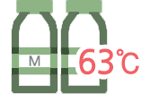
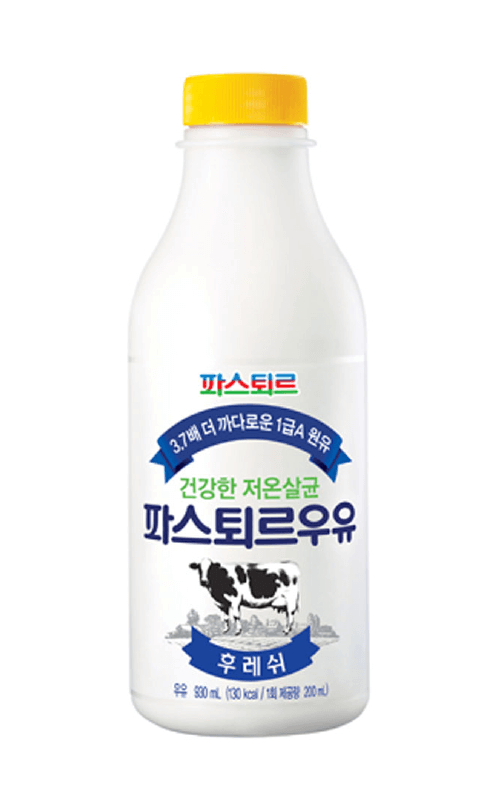
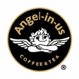

메인배너
파스퇴르 소개
목장부터 까다롭게 관리한 살아있는 우유
국내 최초 "저온살균우유 파스퇴르"

우리나라 최초의
저온살균 우유
엄마가 안심하고
먹이는 유아식

고객의 건강을 먼저
생각하는 파스퇴르 제품
세계가 사랑하는
파스퇴르
파스퇴르의 플래그십 스토어
'파스퇴르 밀크바(Milk Bar)'
최첨단 위생설비의
생산공정
일일 배송 시스템
고객 니즈를 반영한
맞춤형 제품 생산

건강한 저온살균우유 브랜드
파스퇴르 우유
63℃에서 30분간 살균하는
저온살균공법(LTLT공법)으로 만든
파스퇴르의 대표적 저온살균 우유 브랜드입니다.
HEALTHY & HAPPY (건강과 행복, 푸르게)
HUMAN (인간, 아름답게)
NATURE (자연, 깨끗하게)
이전 버튼
63℃ ,30분 건강한 저온살균
다음 버튼
목장부터 까다롭게 관리한 살아있는 우유
국내 최초 "저온살균우유 파스퇴르"
파스퇴르는 1987년 국내 최초 저온살균우유 ‘파스퇴르 후레쉬우유’를 출시한 이래,
농후 발효유 ‘쾌변’, MSD공법 ‘위드맘(With Mom)’ 등 수많은 고품격 유제품을 출시하며
유제품 전문브랜드로 성장해왔습니다.
우유팩
무항생제인증 바른목장 우유(팩)
국가로부터 엄격한 기준에 의해, '친환경 무항생제 인증'을 받은 목장의 원유만 별도 집유하여 생산한 우유.
그릭요거트
바른목장 GREEK STYLE YOGURT
무항생제 인증 목장 원유로 만든 건강한 디저트 ! 더욱 부드럽고 진한 GREEK STYLE YOGURT
요구르트
오직 우유 100%로 만든 요구르트
오직 우유만을 발효하여 만든 플레인 요구르트. 장에 좋은 강한 생명력의 식물성 유산균 함유.
파스퇴르 소식
contact
양평동(본사) 롯데푸드(주) 파스퇴르
(07207) 서울특별시 영등포구 양평로 21길 10(서울특별시 영등포구 양평동5가 20 롯데양평빌딩)
전화 : 02-2168-5252
팩스 : 02-2679-1090
주문전화 : 080-000-1000 (자동주문)
famliy site

